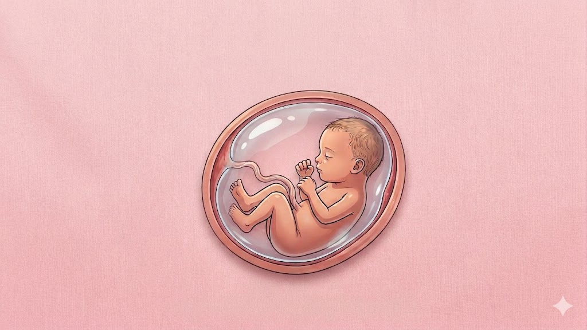
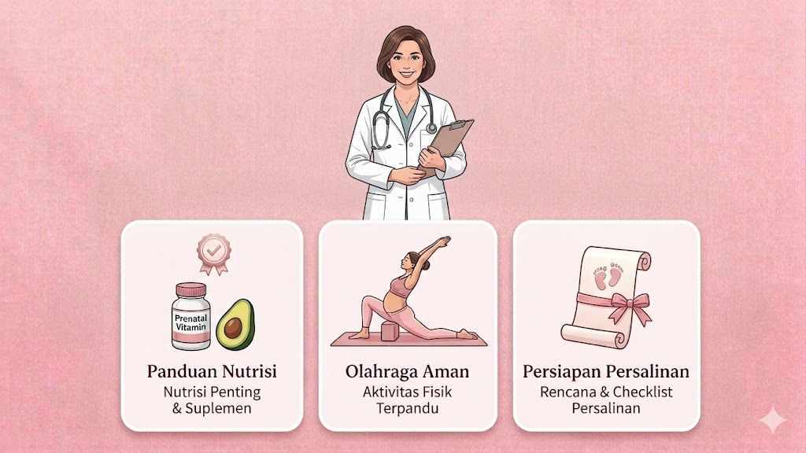
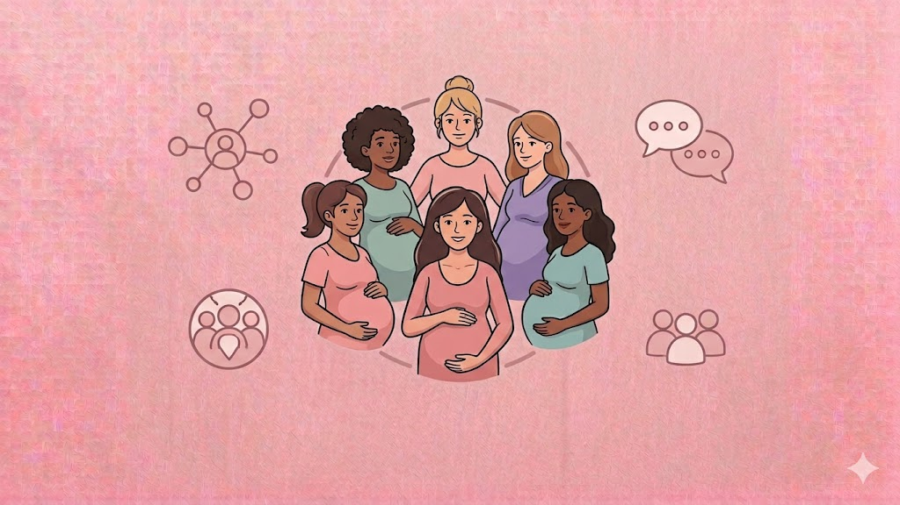

Memulai Perjalanan Sehat Anda
Mudah digunakan dalam 4 langkah sederhana
Daftar Akun
Buat akun dengan email dan isi usia kehamilan Anda
Monitor Perkembangan
Lihat info detail perkembangan janin setiap minggu
Baca Panduan
Tips nutrisi, olahraga, dan persiapan persalinan
Bergabung Komunitas
Terhubung dan saling mendukung dengan sesama bumil
Fitur Unggulan BundaCare
Tracker Perkembangan Janin
Dapatkan informasi lengkap tentang perkembangan bayi Anda setiap minggu, mulai dari ukuran, berat, hingga kemampuan yang sedang berkembang.

Panduan Kesehatan dan Nutrisi
Artikel yang ditulis dan diverifikasi oleh dokter kandungan dan ahli gizi bersertifikat. Nutrisi, olahraga aman, dan persiapan persalinan lengkap.

Komunitas Ibu Hamil
Terhubung dengan ribuan ibu hamil di Indonesia. Berbagi pengalaman, tips, dan saling memberi dukungan dalam perjalanan kehamilan Anda.

Cerita Nyata dari Ibu Hamil
Ribuan ibu hamil telah merasakan manfaat BundaCare dalam perjalanan kehamilan mereka
"Sangat membantu! Saya jadi tahu apa yang harus dimakan dan kapan harus cek kandungan. BundaCare seperti dokter pribadi saya."
"Forum komunitas sangat supportif. Setiap kali saya khawatir, selalu ada bumil lain yang siap dengarkan dan berbagi pengalaman."
"Tracker perkembangan janin sangat detail. Setiap minggu saya excited lihat update ukuran dan berat bayi. Dokumentasi yang bagus!"
Siap Memulai Perjalanan Sehat?
Daftar sekarang dan dapatkan akses penuh ke semua fitur BundaCare.